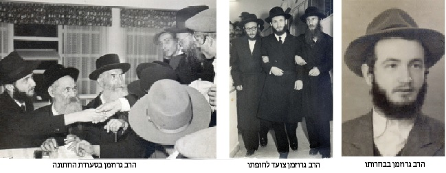

א לפי חסידים ואנשי מעשה מלאו ביום ראשון השבוע את רחובות כפר חב”ד, ואת ה’זאל’ הגד
אלפי חסידים ואנשי מעשה מלאו ביום ראשון השבוע את רחובות כפר חב”ד, ואת ה’זאל’ הגדול של ישיבת “תומכי תמימים” המרכזית בהלוויה רווית יגון של הגאון החסיד הרב מאיר צבי גרוזמן ע״ה, והוא בן שמונים ושלוש שנים.
אלפי חסידים ואנשי מעשה מלאו ביום ראשון השבוע את רחובות כפר חב”ד, ואת ה’זאל’ הגדול של ישיבת “תומכי תמימים” המרכזית בהלוויה רווית יגון של הגאון החסיד הרב מאיר צבי גרוזמן ע״ה, והוא בן שמונים ושלוש שנים.
מאת א.ד. מור

הרה״ח ר׳ מאיר צבי גרוזמן ע״ה (שכונה בפי כל בשם החיבה ר׳ מונקע) היה ללא ספק דמות חסידית ייחודית בניחוח של פעם, חדורה בעבודה פנימית עמוקה ומונחת לחלוטין בעולמה של תורה. פטירתו היכתה באבל את אלפי התלמידים שהושפעו ממנו במשך למעלה מיובל שנות שימושו כר״מ בישיבות חב״ד בארץ הקודש.
תולדות חייו
תחילת מסכת חייו של הרב מאיר צבי גרוזמן ז״ל היא בברית המועצות. הוא נולד ביום י״ז בשבט תרצ״ד לאביו הרב מרדכי גרוזמן ולאמו מרת פלה לבית ברגר.
כבר משחר נעוריו ספג את ההווי החסידי לעומקו. בהיותו כבן עשר שהה עם משפחתו בעיר סמרקנד, שם שאב מלוא חופניים אווירה חסידית מגדולי החסידים שהתגוררו במקום. בין השאר היה מתפלל ב”ר’ ישראל נח’ס מניין”, כפי שסיפר לימים:
“בשבתות נהגתי לבוא לביתו של ר’ ישראל נח [בליניצקי, שכונה “ישראל נח הגדול”], בכדי לראות את החסידים מתפללים ב’עבודה’. ר’ ישראל נח עצמו היה מתפלל במניין הראשון שהחל בשעה 9 והסתיים ב–11. רק לאחר שהסתיים המניין ראשון, החל המניין של ה’עובדים’.
“במניין זה שררה אוירה עילאית. בעת התפילות איש לא שת ליבו לסבל היום–יומי; החסידים שהתחנכו בישיבת תומכי–תמימים בליובאוויטש, היו שקועים בתפילתם כמו בימים הטובים. הבית היה בן חדר אחד, ולפניו פרוזדור צר וקטן. בתוך החדר עמדה מכונת אריגה, ממנה ר’ ישראל נח התפרנס בדוחק. המכונה תפסה רבע מהחדר, ואילו בצידי החדר עמדו מיטות. בזמן שה’עובדים’ התפללו, ישבו ר’ ישראל נח ורעייתו סביב שולחן צר לסעודת שבת. ובתווך, במקום שנותר בין המיטות המכונה והשולחן, נדחסו כחמשה עשר חסידים שהתפללו באריכות ובדביקות”.
בשנת תש״ח הצליחה המשפחה להימלט מגבולות השלטון הסובייטי ולעלות לארץ הקודש. היציאה מברית המועצות הייתה כרוכה בסכנה של ממש. “ההוצאות בבריחה זו היו גדולות”, הוסיף וסיפר כעבור שנים ארוכות. “ראשית היה צריך לשלם על הנסיעה עד לבוב, ושם לשלם על מסמכים מזויפים, ועוד. המצב הכלכלי של משפחתנו בזמן המלחמה היה בכי רע, ומכיוון שכך אבא - ר’ מרדכי - לא הצטרף לנוסעים ללבוב. כשר’ ישראל נח בליניצקי שמע שאיננו נוסעים, פנה לאבא ושיכנע אותו כי כדאי לו להגיע ללבוב, שם כבר ידאגו לו למימון הנסיעה. בזכות השפעתו זו, יצאנו ללבוב ומשם הצלחנו לצאת מברית המועצות, ולהשתחרר לתמיד מהעול הקומוניסטי”.
ר’ מרדכי גרוזמן התיישב ברמת גן וייסד את בית–הכנסת החב״די הראשון במקום, ואילו הבן - שהיה אז בן ארבע–עשרה - נשלח ללמוד בישיבת “אחי תמימים” שבתל אביב. “כשהגעתי ללמוד בישיבה בהיותי נער בן 14, כיהן אז הרב חנזין כמגיד שיעור. הוא מסר שיעור כללי בנגלה. אני זוכר אותו כלמדן מופלג וחריף מוח. כשהיה קורא את הגמרא, היה מסביר על אתר גם את ביאוריהם של שאר המפרשים על הסוגיא. אהבתי מאוד לשמוע את שיעוריו העיוניים.
“עבורנו, התלמידים שהגיעו מרוסיה באותם ימים, מתכונת הלימודים הזאת הייתה בגדר חידוש רבתי. ראשית, משום שברוסיה לא היו ספרים לכל תלמיד; כמו כן, כל כיתה למדה במקום אחר. ואילו בארץ ישראל למדו כל הכתות בבניין אחד, ולכל אחד היה ספר משלו.
“מלבד גאונותו, שבתה את לבי התייחסותו המיוחדת לכל תלמיד - רגש של כבוד וקירוב”.
מתלמיד מובהק
למשפיע מובהק
המשפיע בישיבה באותה עת, היה החסיד הנודע הרב שלמה חיים קסלמן. ר׳ שלמה חיים נהג לקרב אליו תלמידים בעלי כישרונות וחושים מיוחדים, וכנראה שעובדה זו גרמה לו לקרב במיוחד את מאיר גרוזמן הצעיר, שזכה ליחס של קרבה נדירה מצד רש״ח ואף חלק אתו את אותו החדר בלילות בהם היה ר׳ שלמה חיים ישן בפנימיית הישיבה.
בראיון שנערך בעבר עם הרב גרוזמן בקשר עם הקרבה שהייתה לו לר׳ שלמה חיים, סירב הרב גרוזמן לדבר הרבה. הוא אישר את העובדה הידועה שהיו תקופות בהן רש״ח חלק אתו את אותו החדר בישיבה בתל אביב ובלוד, והסביר שדווקא בשל–כך ובגלל שהיו לו שיחות נפש כל כך ארוכות ומשפיעות עם הרש״ח, קשה לו לשים את האצבע ולהורות על דבר ספציפי אחד שהנחיל לו רבו האהוב… בכל זאת הוא נענה לשאלת המראיין בניסיון להצביע על הדבר הייחודי יותר מכל, לפי דעתו, בר׳ שלמה חיים, ואשר גרם לכל כך הרבה מושפעים ״לקבל״ ממנו בצורה פנימית וייחודית ביחס לשאר המשפיעים בדור האחרון.
״התכונה המיוחדת שלו הייתה בזה שהיות והוא היה יהודי שעבד את ה׳, וכשיהודי עובד את ה׳ יש לו אהבת ה׳ ויראת ה׳ - ממילא גם הייתה לו אהבת ישראל. רש״ח אהב כל בחור, התעניין בו באמת, ובאמת ובתמים היה אכפת לו ממנו. זה הורגש אצל כולם וזו הייתה התכונה המיוחדת שלו״ תיאר הרב גרוזמן.
כמו כן זוכר הרב גרוזמן הנהגה מיוחדת שהייתה לר׳ שלמה חיים, והיא: להישאר ער בליל שישי בכל מעמד ומצב. זו הייתה הוראה שהרש״ח קיבל מהרבי הרש״ב והוא הקפיד לקיים אותה בדקדקנות…
ר”מ בישיבה
עוד בימי בחרותו
בשנת תש״ט נוסדה ישיבת ‘תומכי תמימים’ בפרדס בלוד, וכאשר - בקיץ של תשי״א - הועתקה ישיבת ‘אחי תמימים’ על כל צוותה ותלמידיה, מתל אביב והתאחדה עם ‘תומכי תמימים’ בלוד, עברו גם הרב ותלמידו חביבו ללמוד שם.
בהיותו בחור היה ר׳ מונקע בין המייסדים של גליון ‘פרדס התמים’, (שבלסוף ראה אור רק חוברת אחת, בשנת תשי״ד, ולא הוסיף להתפרסם). הגיליון הבודד יצא לאור תחת עריכתו הראשית של הרה״ג הרב ברוך שמעון שניאורסון - לימים ראש ישיבת טשעבין בירושלים ובאותו זמן כיהן כראש הישיבה בלוד. בראשיתו של הגיליון התפרסם מכתב מאת העורכים הקורא לרבנים לשלוח הערותיהם לקובץ, חתומים יחד עם הרב מאיר צבי גרוזמן הצעיר, עוד שניים מגדולי רבני חב״ד המפורסמים כיום, הלוא הם - יבלח״ט - הגרמי״ל לנדא והגר”י פרידמן שי׳. עובדה זו מלמדת על כישרונותיהם שבלטו כבר באותה תקופה.
ב”ביטאון חב”ד” אנו מוצאים טפח על מעלותיו של הרב גרוזמן, כאשר עם בואו בקשרי השידוכין ביום ח’ בניסן תשט”ו נכתב “התקיימה קישורי התנאים של הת’ מרדכי צבי שי’ גרוזמן עם ב”ג בתו של הרה”ח הר”ר יוסף שניאורסאהן ע”ה. החתן הנו מבחירי תלמידי ישיבת תומכי תמימים ליובאוויטש בלוד”. חודשים ספורים לאחר מכן, דווח על חתונתו וצויין כי “החתן הנו מבחירי תלמידי ישיבת תות”ל לוד ומשמש כיום כר”מ באחת המחלקות בישיבה”. העובדה שעוד לפני נישואיו מונה הרב גרוזמן לשמש כר״מ בישיבה, העידה על יכולותיו הלימודיות הגבוהות.
כאשר הישיבה המרכזית עברה מלוד לכפר חב״ד בשנת תשכ״ג, עברו לשם גם המשפיע הרש״ח קסלמן, הרב ישראל גרוסמן כראש ישיבה, והרב גרוזמן כמגיד שיעור. לימים אף מונה כמנהל רוחני וכחלק מצוות ראשי הישיבה.
את תפקיד מסירת השיעורים לתלמידי הישיבה בכפר חב״ד המשיך הרב גרוזמן למלא עד שנותיו האחרונות ממש. אלפי תלמידים הושפעו ממנו במהלך ששים השנים שבהן היה לא רק מוסר שיעורים, אלא גם מתוועד עם התמימים ומחזק אותם בעבודת התפילה ובהתקשרות לרבי.
רצון עצמי,
רצון פנימי, רצון חזק
בראש מעייניו של הרב גרוזמן עמדו תלמידיו. גם כאשר נכנס ל’יחידות’ בקודש פנימה, חלק ניכר מהזמן היה מוקדש לחינוכם של התלמידים והדרכתם.
באחד משנות הלמ”דים זכה להיכנס ליחידות, במהלכה אמר לו הרבי על רצונו העז שתלמידי התמימים יהיו בקיאים בתורת הנגלה. על יחידות זו סיפר הרב גרוזמן בהזדמנויות רבות, ולהלן תמצית דבריו בדיוק כפי שהם נשמעו מפיו:
“כשהגעתי לרבי, נכנסתי ל’יחידות’, והרבי דיבר איתי על כך שהישיבות שלנו לא מספיק מתפתחות בכמות, יחסית לישיבות לא–חב”דיות. כשעניתי שאצלם יש את הענין של לימוד תורה ‘שלא לשמה’ ואולי לכן הם גדלות, ענה הרבי שגם אצלנו יכול להיות הענין של ‘שלא לשמה’ על ידי הבנת התורה. וכמו כן, כאשר הבחורים נוסעים ל’מרכז שליחות’, אזי אם הם יודעים ללמוד הם יכולים להיכנס אל הרב המקומי, לדבר אתו בלימוד - ואז ה’הפצה’ יכולה להיות אחרת לגמרי.
“במהלך הדברים התבטא הרבי שבחור שאינו יודע ״שאגת אריה״ (והרבי אף ציין שמות של עוד ספרים תורניים אלא שהרב גרוזמן לא זכר בבירור מה הם; ואילו שאגת אריה הרבי אמר בבירור) הרי הוא מחלל את שם הבעל שם טוב הקדוש, הרב המגיד, אדמו”ר הזקן ועוד, עד הרבי השווער! כך התבטא הרבי במהלך היחידות הזו…
“בין הדברים הרבי אמר שישנם בחורים ש”קאכן–זיך” [=עוסקים בלהט] ב’השכלה’ של חסידות. ממילא צריכים הם לדעת, שניתן להבין טוב חסידות רק כאשר מבינים טוב נגלה… ואם לא - אי אפשר להבין חסידות. והרבי הוסיף, שהגם שבליובאוויטש היו חסידים גדולים שלא ידעו כל–כך טוב ‘נגלה’ - זהו יוצא מן הכלל. אבל ‘התורה על הרוב תדבר’ ואי–אפשר להבין חסידות בלי להבין ‘נגלה’.
“לפני נסיעתי בחזרה, נכנסתי שוב אל הרבי וכתבתי שתי נקודות: א. שצריך לדבר עם הבחורים שילמדו ‘נגלה’ ‘שלא לשמה’ כדי שיצליחו ב’הפצה’ ויבינו היטב חסידות. ב. שהיות ו’התקשרות’ לרבי ‘מדבר’ לבחורים, האם לפעול עליהם שילמדו מצד זה.
“הרבי קרא את הפתק זמן רב - למרות שבדרך–כלל, כידוע, הרבי קרא פתקים במהירות גדולה. והגיב: “שלא לשמה? צריכים ללמוד לשמה! אלא, שכאשר לא מצליחים ללמוד לשמה, לפחות שילמדו בשביל זה”… בנוגע למה שכתבתי על ‘התקשרות’, ענה הרבי: הענין של ‘התקשרות’ הוא מילוי הרצון של המשלח. והרצון שלי הוא שבחורים יהיו “קאכן זיך” [=יעסקו בלהט] בנגלה…
“הרבי התבטא בכמה ביטויים בנוגע לרצון וכשיצאתי, לא הצלחתי לזכור את כולם, הרבי התבטא בלשונות כמו “רצון פנימי”, “רצון עצמי” ועוד ביטויים על–דרך–זה. ביטויי רצון עמוקים ונעלים, המבטאים, עד כמה רצונו של הרבי הוא שבחור ילמד הרבה ‘נגלה’.
“אפשר לעורר את הבחור שיאהב ללמוד תורה ובעיקר נגלה דתורה, אם בשביל הצלחה ב’מבצעים’, אם בשביל הצלחה בלימוד החסידות, והעיקר - כדי להתקשר לרבי, כי בלימוד הנגלה ממלאים את רצונו (הפנימי, העצמי וכו’) של הרבי!
הצ׳רטר הראשון
תחנת–דרך מעניינת נוספת במהלך חייו של הרב מאיר צבי גרוזמן ע״ה, היא השתתפותו בטיסת הצ׳רטר הראשונה שהפעילו חסידי חב״ד באה״ק, ואשר נערכה לקראת חודש החגים של שנת תש״כ. בטיסה זו השתתפו חסידים רבים מארץ הקודש שזכו לנסוע לראשונה לראות את פני הרבי, וביניהם גם הרב מאיר צבי גרוזמן.
בראיון שהתקיים עמו בעבר, סיפר הרב גרוזמן מעט על זיכרונותיו מהחוויה המיוחדת הזו, ואנו מביאים כאן חלק מהדברים.
על זיכרונותיו מההכנות לקראת הנסיעה סיפר ר׳ מונקע, שהחסידים היו שרויים בהתרגשות כללית גדולה. רוב הנוסעים מעולם לא זכו לראות את הרבי לפני כן, וביודעם איך היו החסידים בליובאוויטש של פעם מכינים את עצמם לקראת הגעתם אל הרבי, החלו גם הם לטהר את המחשבות והדיבורים, להתעסק כמה שיותר בתורה ובתפילה ובדיבוק חברים, שכן - נוסעים לרבי!
אחת התחנות בדרך לרבי הייתה בנמל התעופה בפריז. כיוון שהעצירה בפריז תוכננה מראש, הגיע קהל רב מאנ״ש בצרפת לפגוש את הנוסעים מאה״ק בטרמינל השדה. משום מה, הרשויות המקומיות לא הניחו לנוסעים להצטרף אל מקבלי פניהם. הם אמנם יכלו לראות אלו את אלו, כיוון שהנוסעים שהו בקומה התחתונה ואילו מקבלי הפנים מבין אנ״ש יכלו לצפות בהם בעד חלונות הזכוכית בקומה העליונה, אלא שלהתאחד ממש נבצר מהם.
כך או כך, השמחה הרקיעה שחקים, ובעוד החסידים רוקדים בקומה למטה, החלו אנ״ש מצרפת לרקוד יחד עמם בקומה העליונה. היה זה מחזה מיוחד במינו שנחקק בלב כל מי שהיה שם. זיכרון מיוחד היה לרב גרוזמן מר׳ ישראל נח הגדול, שהגיע אף הוא לקבל את פני הנוסעים מארץ הקודש ומחא כפיים ורקד בהתלהבות לעומתם… ״הוא היה בעל רגש גדול, ושמח מאוד לראות אותנו נוסעים לרבי״ - סיכם הרב גרוזמן את החוויה המרעישה.
המאמר הראשון שזכו הנוסעים לשמוע מפי קודשו של הרבי היה ד״ה ״לך אמר לבי״, והרבי אף נתן להם אחר כך רשות להאזין מחדש להקלטה של המאמר, למרות שבאותן שנים לא ניתנה רשות מהמזכירות לפרסם צילומים או הקלטות.
״את התוכן של המאמר - אפשר לסכם במילים״ אמר הרב מאיר צבי למראיין, ״אך את החוויה שבלהיות נוכח במעמד כזה, כשעיניך רואות את הרבי ואוזניך שומעות בשעת אמירתו את המאמר - לא ניתן להעביר באף אופן, ובטח שלא לשכתב על עיתון״.
מאיר פנים
לצד גדלותו המפורסמת של הרב גרוזמן בתורת הנגלה אשר מקבלת ביטוי, בין השאר, בספרו התורני ״אמרי צבי״ על מסכת שבת, היה הרב גרוזמן איש של עבודת ה׳ פנימית, בדיוק כפי שחינך והדריך ר׳ שלמה חיים את מושפעיו.
ר׳ מונקע היה עוסק שעות ארוכות בעבודת התפילה ובהכנות לקראתה, ואף היה לו חדר מיוחד בביתו לשם כך. בשנים הראשונות לעבודתו בישיבה, כשנהג להתוועד עם התמימים בהזדמנויות תדירות יותר, אף היה תובע מהם לעסוק בעבודה שבלב.
לצד היותו גאון בתורה, תלמיד חכם ועובד ה׳, הוא היה גאון גם במידותיו התרומיות ובהארת הפנים שלו לכל אדם באשר הוא. רבים זוכרים את דיבורו הנעים של הרב גרוזמן עם כל אדם, את שיעוריו שנמסרו לאנ״ש בכפר חב״ד לעתים ותמיד נאמרו ברוגע ובסבר פנים יפות.
כמדומה שבנושא זה, התעלה הרב גרוזמן לדרגות גבוהות, למרות שלא רבים ידעו על גאונותו בנתינה ובחסד, ולו משום שהוא עצמו עסק בזה בשקט ובצנעה, הרחק מאור הזרקורים. הוא סימל כדוגמה את המידה שחסידים איחלו לעצמם לרכוש - “חוש בעשיית טובה ליהודי”.
הרב גרוזמן שימש כתובת ואוזן קשבת לעשרות יהודים, חסידי חב”ד ושאינם, שראו בו יהודי פיקח וקשוב; במקביל לתפקידו הרשמי כאחד מראשי ישיבת תומכי תמימים המרכזית, שימש גם כיועץ חינוכי, רפואי, זוגי, כלכלי ועוד כהנה וכהנה. מספר הטלפון שלו היה מפורסם לכל. וכך, ללא מתווכים ומשמשים - מצאו בו יהודים רבים מקור לייעוץ ונחמה.
פיקחותו, יחד עם ניסיון החיים שצבר, הניבו פתרונות יצירתיים בכל תחום. עם זאת, עיקר הסיוע התבטא בעצם ההקשבה. הוא היה אמן ההקשבה. אנשים היו מסוגלים לפרוק את ליבם בפניו במשך שעות, והוא יושב ומקשיב. ולא שהיה אדיש חלילה, להיפך: הייתה זו הקשבה מלאת אכפתיות ואמפתיה, שבה לבד הייתה מחצית הבעיה נפתרת.
אין איש ממכריו שאינו זוכר את היתום ישראל ז״ל שגידל הרב בביתו במשך שנים, כשהוא דואג בעצמו לטפל בו ולדאוג לכל מחסורו.
מספר הרב לוי אפשטיין, משלוחי הרבי בהוד השרון: “בשנים האחרונות זכיתי להיות בקשר עם הרב גרוזמן ולהיות עד לחוש המיוחד בעשיית טובה ליהודי. מעולם לא שידר לפונים אליו תחושה כי הם מטרידים אותו. אדרבה, הם הרגישו חלק מהמשפחה והחשיבוהו כסבא. גדלותו התבטאה בכך שגם הוא החזיר להם באותו מטבע; הוא השתתף בשמחותיהם וליווה אותם כאילו היה חלק מהמשפחה.
“לפני מספר חודשים התקשר אלי הרב גרוזמן וביקש ממני להתגייס לתמיכה באדם מסויים. הבעתי בפניו חשש כי המקרה יטריד את מנוחתי וישאב אותי לתוכו. הרב גרוזמן שמע, וענה כך: ‘ומה אתה חושב? ממי אפשר לבקש עזרה, ממי שלא נשאב לתוך הבעיה? דווקא האנשים הרגישים שסבל הזולת מפריע להם - הם אלו שיתגייסו לסייע בעת הצורך’.
“דומני כי משפט זה מאפיין את הרב גרוזמן עצמו. הוא היה רגיש לסבלם של הפונים אליו והקשיים שהציגו בפניו אכן כאבו לו. כאב זה הוביל אותו לסייע ולעזור, ללא שיקולי התאמה וללא בקשת תמורה או כבוד. כך נחשפתי בשנה האחרונה למקרה מפעים, בו הרב גרוזמן הטריח את עצמו עד לצפון הארץ, כדי לפגוש יהודי שנקלע לבעיה מסויימת”.
סיפר נכדו הת’ מנדי גרוזמן: “רק היום שמעתי, במהלך ימי ה’שבעה’, כי באחת הערים המרוחקות מכפר חב”ד הייתה משפחה שסבא הכיר אישית את אבי המשפחה. לפני כמה חודשים נודע לסבא שיש להם בעיות חמורות בשלום בית. סבא ניסה לתפוס את אבי המשפחה על מנת לדבר על לבו, אך הלה התחמק מלשוחח ולא ענה לו. סבא מחל על כבודו ונסע במיוחד לעיר המרוחקת, בילה כמה שעות בבית המשפחה ולא זז משם עד שהשכין שלום בבית”.
ועל דא קא בכינא, על יהודי גאון בתורה וגאון במידות טובות, שבעצם חייו שימש דוגמא ומודל, ועתה איננו עוד.
על הרגישות שלו לכל אדם, מספר קרוב–משפחתו הת’ מנדי זאיאנץ: “אני זוכר את הפלפול הראשון בספרו “אמרי צבי” - אותו למדתי כשהגעתי לישיבה במגדל העמק. נהניתי מן ההיגיון הבהיר שבדברים ושמחתי בעובדה שמדובר בסבא של בן–דודי…
“יום אחד נסעתי לכפר חב”ד, ובן דודי - שהגיע אז לכפר חב”ד מהישיבה בחולון - הזמין אותי לבוא איתו לבית של סבא וסבתא. הסכמתי ונכנסתי אחריו, בהיסוס–מה, לביתם. הייתי מוכן מראש לשאלות שתמטיר עלי סבתא חיה, אבל לגמרי לא ציפיתי לפגוש את הרב.
“מיד כשנכנסתי, יצא ר’ מונקע מהחדר הצדדי שלו [זה החדר שבן–דודי סיפר לי עליו גדולות ונפלאות, איך שסבא שלו יושב ומתפלל ועוסק שם בלימוד] - ונתקל ישר בי ובנכדו. לגמרי לא ציפיתי שהוא יתייחס אלי יותר מידי, אבל ר’ מונקע ניגש אלי בהתעניינות, שאל מי אני והיכן אני לומד - וכששמע שאני לומד במגדל העמק, נכנס שניה לחדרו, הוציא משם את ספרו שבדיוק יצא–לאור במהדורה חדשה ושאל אם אוכל לקחת אחד לרב גולדברג…
“עודי עומד נרגש מהרעפת תשומת–הלב (בסך–הכל נער בן שש–עשרה מברזיל שמדבר בנחת עם ראש ישיבה חשוב) והנה הוא חוזר לחדר, מוציא עוד ספר ומגיש אותו לי. ‘בעצם, קח ספר אחד גם לעצמך’ אמר לי, ‘אני בטוח שהרב גולדברג לא יקנא’…
“אז אולי זה לא היה רגע ענק, אבל עובדה היא שזכור לי היטב איך יצאתי כולי מרוגש באותו הרגע, אוחז בידי את שני הספרים שנתן לי הרב גרוזמן ונושא בליבי הרגשה חמימה…
“כזה היה הרב גרוזמן - לא רק תלמיד–חכם עצום, ראש ישיבה חשוב ועובד ה’ פנימי ואמיתי שהשקיע שעות בתפילה ולימוד, אלא שלפני הכל, הוא היה איש גדול שמדבר עם כולם בגובה העיניים ויודע להתנהג בטבעיות ובפשטות ולהעניק יחס אמיתי לכל אחד”.
מוסיף ומספר ר’ רפאל חירותי, על התקופה בה החל להתקרב מחדש ליהדות, ועדיין קיננו בו ספקות ולבטים: “אותה שבת - שבת מברכים של חודש אלול - שנה בדיוק לאחר השבת הראשונה שלי בכפר חב”ד - השתתפתי בהתוועדות שהתקיימה לבחורי הישיבה אחר התפילה. והנה פתאום, באמצע ההתוועדות, פנה אלי המשפיע ר’ מונקע גרוזמן, ואמר: “עליך לצאת מהמחתרת!” “כבר יצאתי” - עניתי לו מלא סיפוק והוא היה מאושר וקרא לי להגיד ‘לחיים’. לאחר מכן דיבר זמן ממושך עם הבחורים על כך שבחור חדש המתקרב ליהדות ולחסידות, עובר תהליך של שינוי באין ערוך למצבו הקודם, בעוד שמבחור רגיל נדרש סך הכל טיפה לשנות את מידותיו והנהגותיו, להוסיף פה ושם מצווה או הידור, ואף על פי כן רואים שהבחורים מתקשים לעשות זאת”.
תושבי כפר חב”ד התרגלו לראות את ר’ מונקע בפשטותו. כמו שיא גדלותו כתלמיד חכם שכל עולמו היה תורה, כך גם היתה פשטותו. בשעות הבוקר אפשר היה לראות אותו כמעט תמיד צועד ברחוב כשהוא מחזיק בידו שקית מלאה מצרכים שרכש במכולת השכונתית בכפר חב”ד. בהליכה מדודה, מהורהרת משהו, היה פוסע לאיטו, מבלי להראות סימני עייפות ולאות. מעולם התנגד להצעה לסייע לו לשאת את חבילותיו. זה היה מופרך בעיניו.
הרב גרוזמן היה סמל ומופת לצניעות, בהנהגה יומיומית. תלמידיו מעידים כי מעולם לא ראוהו זועף או כועס, או מרים את קולו על תלמיד או על כל אדם אחר בסביבתו. אפשר לומר: תוכו כברו וברו כתוכו. הוא השכיל להציג את עולמו הפנימי בצורה האמיתית והכנה ביותר.
תלמידיו וצאצאיו הרבים של הרב גרוזמן, המשמשים כשלוחים ברחבי העולם - וודאי יוסיפו בכתיבת זכרונות, בסיפורים, ובהוראות שנלקחו ונלמדו ממנו, ועוד חזון למועד.
•
בתחילתו של שבוע זה, הסתיימו בכאב 83 שנה של עמל בתורה ובתפילה, יחס חם לתלמידיו בישיבה הסמוכה לביתו בכפר חב”ד, עצה וסיוע לרבים שראו בו אדם מבין ומכיל, ומעל הכול איש שמבטו המאיר תמיד העניק לאלפים רבים רוגע ואהבה.
הותיר אחריו את רעייתו תיבדלחט”א הגב’ חיה גרוזמן, וכן בנים ובנות: הרב יוסף ישראל גרוזמן; הרב יצחק גרוזמן, שליח הרבי בראשון–לציון; הרב שמואל גרוזמן, שליח הרבי במושבה מגדל; הרב שלום דובער גרוזמן, שליח הרבי בוינה–אוסטריה; הרב שניאור זלמן גרוזמן מצפת; הרב משה גרוזמן, שליח הרבי ומשפיע בראשון לציון; מרת שושנה זאיינץ מברזיל ומרת יפה רייכמן ממודיעין.
הלוויתו יצאה מביתו לעבר היכל הישיבה המרכזית, משם המשיכה ל’בית מנחם’. בתום המסע בכפר חב”ד נטמן בבית העלמין בצפת.